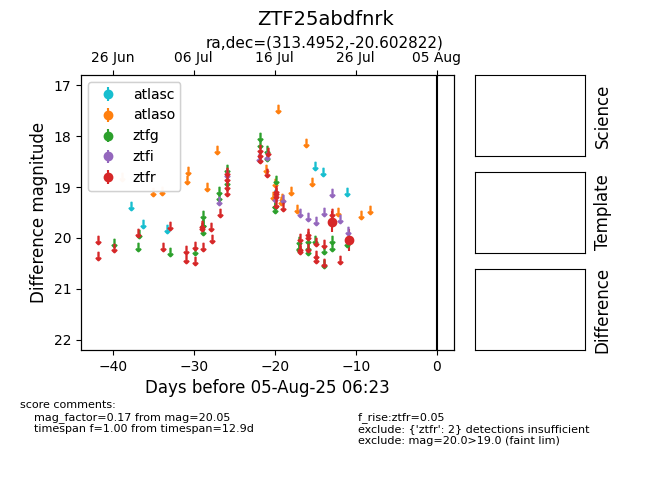

Target ZTF25abdfnrk at 2025-08-06 17:27, see:
FINK: fink-portal.org/ZTF25abdfnrk
Lasair: lasair-ztf.lsst.ac.uk/objects/ZTF25abdfnrk
ALeRCE: alerce.online/object/ZTF25abdfnrk
alt names
ZTF25abdfnrk (ztf,fink)
coordinates:
equatorial (ra, dec) = (313.4952,-20.60282)
galactic (l, b) = (26.1571,-35.80066)
photometry
last ztfr=20.05
2 ztfr detections
